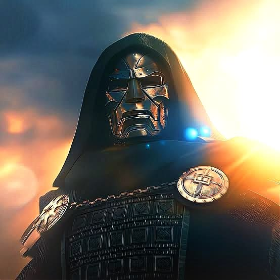

Actor
Born: April 4, 1965, New York City, USA
Famous Roles: Iron Man, Sherlock Holmes, Chaplin, Oppenheimer
Major Awards: Academy Award (Oscar), BAFTA Awards, Golden Globe Awards
Oscar Win: Best Supporting Actor for Oppenheimer (2023)
RDJ is often cited as one of Hollywood's greatest comeback stories. After struggling with substance abuse and legal issues in the late 1990s and early 2000s, he rebuilt his career and became one of the highest-grossing actors in cinema history.
Marvel Villain
Real Name: Victor Von Doom. Marvel, Wikipedia
First Appearance: Fantastic Four #5 (1962). Marvel, Wikipedia
Role: One of Marvel's greatest and most iconic supervillains, primarily the arch-enemy of the Fantastic Four and especially Reed Richards (Mr. Fantastic). Wikipedia, Marvel
Origin: A scientific genius whose experiment exploded, leaving his face scarred. He later forged his famous armored suit and mask. Marvel, Marvel
Ruler of: The fictional nation of Latveria. Marvel, Marvel
Powers & Skills: Genius-level intellect, advanced technology, armored suit, energy weapons, force fields, and mastery of magic/sorcery. Wikipedia, Marvel
Personality: Extremely intelligent, arrogant, ambitious, and obsessed with proving his superiority.
